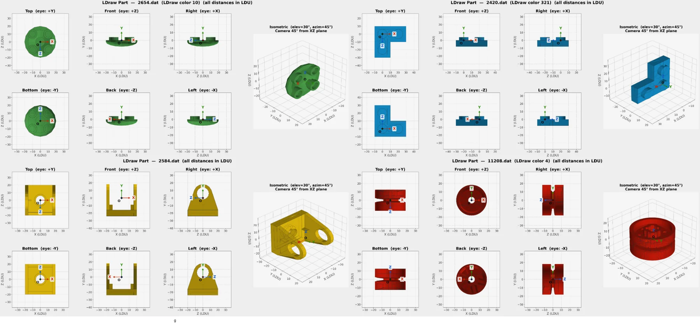

Human Design Sparks
Extract step-wise supervision from human-designed objects and render multi-view observations for brick selection and pose estimation.
Project Page
1UIUC 2Stevens Institute of Technology 3Northwestern University

We study whether multimodal large language models can read arbitrary designs and construct real-world objects from reusable building blocks. We formulate brick assembly as a sequential decision-making problem with two subtasks: brick selection, which identifies the target component, and brick pose estimation, which predicts where and how the selected brick should be placed.
We introduce BC-Bench, a benchmark for evaluating MLLMs on assembly with diverse bricks, and show that current MLLMs struggle with fine-grained part selection and precise spatial placement. To bridge this gap, we propose Brick-Composer, a learning framework that combines Human Design Sparks, World Feedback, and Synthetic Experience. Brick-Composer improves brick selection accuracy by over three times, substantially reduces pose errors, and raises strict step-level assembly success from less than 1% to around 15%.
BC-Bench turns LEGO-style construction into a controlled multimodal reasoning benchmark. Each step provides manual views, candidate brick views, current assembly state, and selected brick geometry. The model must localize the right brick and predict the translation and rotation needed to place it.

The model predicts the row and column of the next brick from a candidate grid. The task becomes difficult when many parts share similar colors, shapes, or functions.
Given the current structure and selected brick, the model predicts a 3D translation vector and rotation matrix in the target-object coordinate system.
Brick-Composer improves assembly reasoning through three complementary supervision sources. Human Design Sparks provide affordance-rich demonstrations from real designs. World Feedback uses the simulator to reveal the visual and physical consequences of model actions. Synthetic Experience expands learning with collision-free, compact, procedurally generated structures.

Extract step-wise supervision from human-designed objects and render multi-view observations for brick selection and pose estimation.
Execute model predictions in the simulator, render the resulting state, highlight errors, and use correction trajectories for learning.
Sample bricks, attach them through feasible connection points, and filter by collision, connectivity, and density to scale supervision.
General-purpose MLLMs show limited zero-shot assembly capability. Brick-Composer substantially improves selection accuracy, reduces translation and rotation errors, and raises strict step-wise success.
| Model | Selection ↑ | Trans. Err ↓ | Rot. Err ↓ | Step-Wise SR ↑ |
|---|---|---|---|---|
| Gemma-3-12B | 4.35 | 269.09 | 63.00 | 0.09 |
| InternVL-3.5-8B | 13.24 | 221.69 | 88.43 | 0.00 |
| Qwen-3-VL-8B | 22.76 | 210.14 | 62.47 | 0.36 |
| Qwen-3.5-VL-27B | 37.44 | 314.32 | 82.94 | 0.18 |
| GPT-5.4 | 43.88 | 310.78 | 74.85 | 0.18 |
| Approach | Selection ↑ | Trans. Err ↓ | Rot. Err ↓ | Step-Wise SR ↑ | Best-object SR ↑ |
|---|---|---|---|---|---|
| Direct Prompting | 22.76 | 210.14 | 62.47 | 0.36 | 4.44 |
| Designer Supervision | 48.29 | 162.82 | 57.81 | 5.40 | 8.92 |
| World Feedback (L) | — | 137.26 | 52.65 | 6.24 | 15.36 |
| Brick-Composer | 68.21 | 65.63 | 37.97 | 14.27 | 41.63 |

The examples below compare GPT-5.4, Brick-Composer, and ground truth assemblies. Brick-Composer recovers more coherent object-level structure across multiple construction steps.


Use the following BibTeX placeholder until the official arXiv or conference entry is available.
@misc{liu2026brickcomposer,
title = {Brick-Composer: MLLMs Construct Everything from Building Blocks},
author = {Liu, Jiateng and Li, Bingxuan and Wang, Zhenhailong and Wang, Rushi and Hong, Kaiwen and Qian, Cheng and Liu, Jiayu and Zhang, Denghui and Driggs-Campbell, Katherine and Li, Manling and Ji, Heng},
year = {2026},
url = {https://github.com/Lumos-Jiateng/Brick-Composer}
}